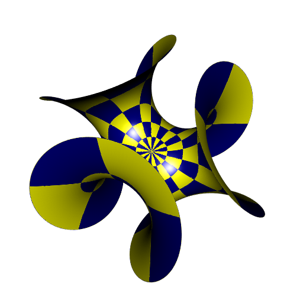
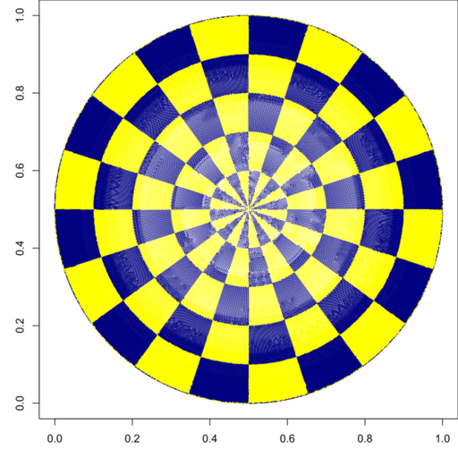
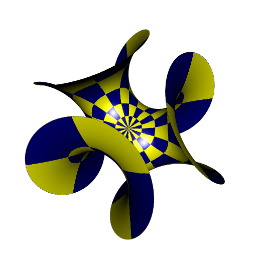

Enneper surface with rotating checkerboard
The github branch of my Github repository cgalMeshes has a vignette explaining how to use parameterizations of surface meshes. A parameterization allows to map a texture on a mesh. Some of them are conformal, meaning that they preserve the angles (the best they can). To install this branch with the vignette, run
remotes::install_github(
"stla/cgalMeshes@github", dependencies = TRUE, build_vignettes = TRUE
)This may take a while. And if that doesn’t work and you use Windows, you can try to install the binary zip file located at https://github.com/stla/cgalMeshes/releases/tag/Github_v3.1.0.
The vignette shows a couple of examples of parametrizations. Among them, there is the Enneper surface with a radial checkberboard:

Here I will show how one can rotate the radial checkerboard.
Let’s start by the beginning. We make the Enneper mesh.
library(cgalMeshes)
library(rgl)
# Enneper surface parameteritazion ####
n <- 3
Enneper <- function(phi, r) {
rbind(
r*cos(phi) - r^(2*n-1)*cos((2*n-1)*phi)/(2*n-1),
r*sin(phi) + r^(2*n-1)*sin((2*n-1)*phi)/(2*n-1),
2*r^n*cos(n*phi)/n
)
}
# do the mesh ####
rmesh <- parametricMesh(
Enneper, urange = c(0, 2*pi), vrange = c(0, 1.3),
periodic = c(TRUE, FALSE), nu = 512, nv = 512, clean = TRUE
)Now we convert it to a CGAL mesh:
# convert to CGAL mesh ####
mesh <- cgalMesh$new(rmesh)There’s not enough vertices in this mesh; if we use this one, the checkerboard will not have regular lines. So we perform an isotropic remeshing to add some vertices:
# add vertices in order that the checkerboard has regular lines ####
mesh$isotropicRemeshing(0.01, iterations = 3, relaxSteps = 2)Now we compute the mesh parameterization:
# compute mesh parameterization ####
UV <- mesh$parameterization(method = "DCP", UVborder = "circle")And here is the code to do the radial checkerboard:
# radial checkerboard ####
UV0 <- UV
UV <- 10 * (UV0 - 0.5)
radii <- sqrt(apply(UV, 1L, crossprod))
angles <- 10 * (1 + atan2(UV[, 2L], UV[, 1L])/pi)
clrs <- ifelse(
floor(radii) %% 2 == 0,
ifelse(
floor(angles) %% 2 == 0, "navy", "yellow"
),
ifelse(
floor(angles) %% 2 == 0, "yellow", "navy"
)
)
# check the checkerboard is correct ####
plot(
UV0, type = "p", asp = 1, pch = ".", col = clrs,
xlab = "u", ylab = "v", xlim = c(0,1), ylim = c(0,1)
)
We compute the normals, we convert the mesh to a rgl mesh, and we assign the checkerboard colors:
# compute normals, convert to 'rgl' mesh, and add colors ####
mesh$computeNormals()
rmesh <- mesh$getMesh()
rmesh$material <- list(color = clrs)Now we make the animation, by rotating the checkerboard:
# animation rotating checkboard ####
fclrs <- function(alpha) {
tests <- floor(angles + alpha) %% 2 == 0
ifelse(
floor(radii) %% 2 == 0,
ifelse(
tests, "navy", "yellow"
),
ifelse(
tests, "yellow", "navy"
)
)
}
# make animation frames ####
alpha_ <- seq(0, 2, length.out = 19L)[-1L]
open3d(windowRect = 50 + c(0, 0, 512, 512))
view3d(0, -20, zoom = 0.7)
for(i in seq_along(alpha_)) {
clrs <- fclrs(alpha_[i])
rmesh$material <- list(color = clrs)
shade3d(rmesh, meshColor = "vertices")
snapshot3d(sprintf("zzpic%03d.png", i), webshot = FALSE)
clear3d()
}It remains to mount the animation with gifski:
# mount animation ####
library(gifski)
gifski(
png_files = Sys.glob("zzpic*.png"),
gif_file = "Enneper-radialCheckerboard-rotating.gif",
width = 512,
height = 512,
delay = 1/8
)